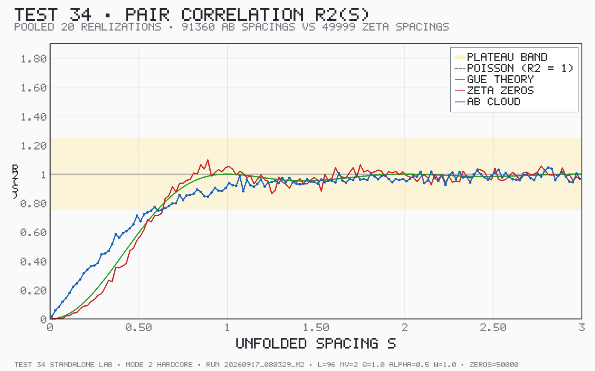
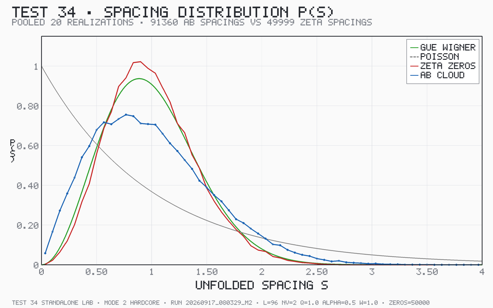

GUE-CONSISTENT — composite verdict (v23): c1 [OK] · c2 [OK] · c3 [OK]
pooled D
0.0970
p-value
2.33e-264
d_GUE
0.0768
d_Pois
0.2108
R2 plateau
0.9531
spacings
91360
Configuration
| zeros file | `/mnt/sdcard/Download/zeta_zeros_2M_odlyzko.txt` |
|---|---|
| zeros used | 50000 |
| lattice | 96 x 96 (9216 sites) |
| vortices Nv / charge q | 2 / 1.0 |
| flux alpha / disorder W | 0.5 / 1.0 |
Realizations
| # | seed | spacings | D | p | d_GUE | d_Pois | plateau | flag |
|---|---|---|---|---|---|---|---|---|
| 1 | 20260976802863 | 4568 | 0.0954 | 1.56e-33 | 0.0762 | 0.2142 | 0.9573 | - |
| 2 | 20260976802964 | 4568 | 0.1012 | 1.17e-37 | 0.0816 | 0.2069 | 0.9413 | - |
| 3 | 20260976803065 | 4568 | 0.1034 | 2.84e-39 | 0.0829 | 0.2135 | 0.9547 | - |
| 4 | 20260976803166 | 4568 | 0.0990 | 4.93e-36 | 0.0795 | 0.2072 | 0.9527 | - |
| 5 | 20260976803267 | 4568 | 0.1073 | 2.66e-42 | 0.0878 | 0.2089 | 0.9433 | - |
| 6 | 20260976803368 | 4568 | 0.1026 | 1.02e-38 | 0.0833 | 0.2062 | 0.9545 | - |
| 7 | 20260976803469 | 4568 | 0.0987 | 7.24e-36 | 0.0779 | 0.2150 | 0.9547 | - |
| 8 | 20260976803570 | 4568 | 0.0911 | 1.28e-30 | 0.0713 | 0.2155 | 0.9551 | - |
| 9 | 20260976803671 | 4568 | 0.0978 | 3.18e-35 | 0.0778 | 0.2120 | 0.9709 | - |
| 10 | 20260976803772 | 4568 | 0.0961 | 5.15e-34 | 0.0759 | 0.2127 | 0.9606 | - |
| 11 | 20260976803873 | 4568 | 0.1004 | 4.18e-37 | 0.0801 | 0.2135 | 0.9453 | - |
| 12 | 20260976803974 | 4568 | 0.1042 | 6.38e-40 | 0.0844 | 0.2149 | 0.9396 | - |
| 13 | 20260976804075 | 4568 | 0.0985 | 1.13e-35 | 0.0778 | 0.2150 | 0.9510 | - |
| 14 | 20260976804176 | 4568 | 0.0926 | 1.32e-31 | 0.0723 | 0.2191 | 0.9507 | - |
| 15 | 20260976804277 | 4568 | 0.0997 | 1.55e-36 | 0.0787 | 0.2130 | 0.9461 | - |
| 16 | 20260976804378 | 4568 | 0.1017 | 5.40e-38 | 0.0809 | 0.2125 | 0.9433 | - |
| 17 | 20260976804479 | 4568 | 0.0993 | 2.76e-36 | 0.0797 | 0.2084 | 0.9685 | - |
| 18 | 20260976804580 | 4568 | 0.0879 | 1.62e-28 | 0.0685 | 0.2232 | 0.9696 | outlier |
| 19 | 20260976804681 | 4568 | 0.1017 | 5.36e-38 | 0.0826 | 0.2106 | 0.9343 | - |
| 20 | 20260976804782 | 4568 | 0.0981 | 2.17e-35 | 0.0784 | 0.2155 | 0.9606 | - |
Plots




Notes
- MAD outlier flag: |D - median| > 3 x 1.4826 x MAD (realization-17 style).
- Leave-one-out pooled D shows how strongly each realization drives the verdict.
- Flagged outliers: [18]
Extra results
| ensemble median D | 0.0991 |
|---|---|
| ensemble IQR | 0.0042 |
| leave-one-out D range | 0.0966 .. 0.0975 (spread 0.0010) |
| MAD outliers | [18] |
| ensemble stability | STABLE |
Timing
| load & unfold zeta zeros | 0.37s |
|---|---|
| statistics & verdict | 0.34s |
| rendering plots | 1.30s |
| TOTAL | 2.01s |